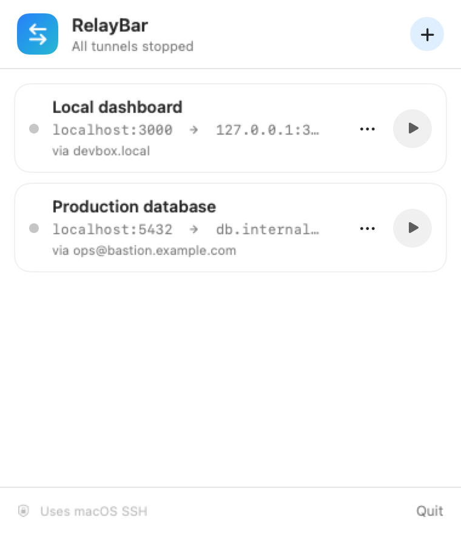
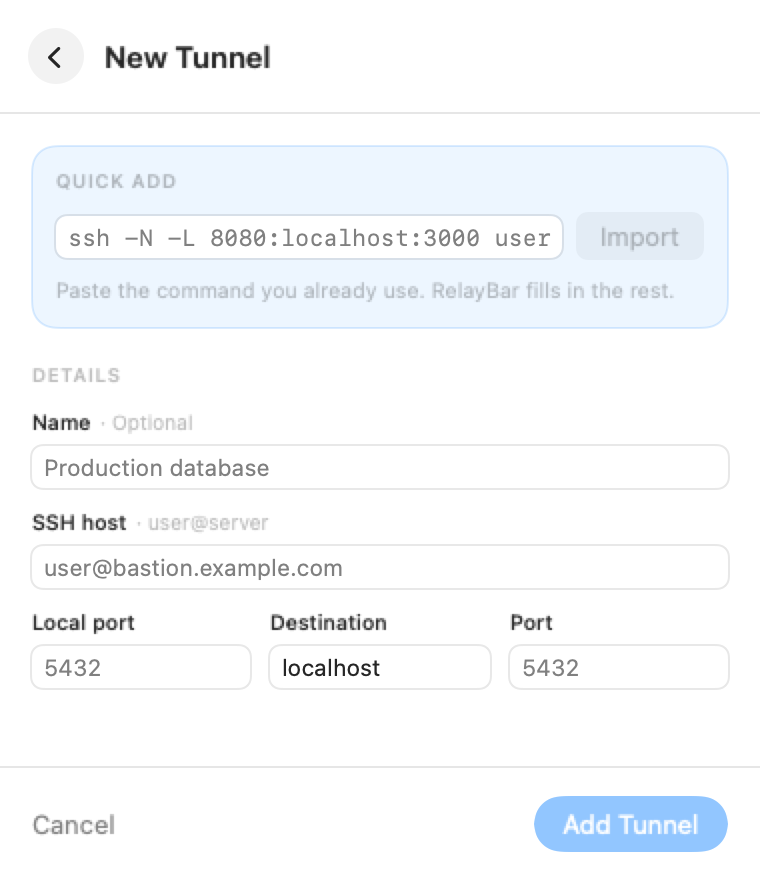

1
Complete
Port forwarding
Save, start, stop, and retry an SSH local forward, then open the forwarded service in your Mac's default browser.
Paste an ssh -N -L command once. Start and stop the
tunnel from your menu bar.
Free and open source · macOS 13 or newer
ssh -N -L 3000:127.0.0.1:3000 devbox.local

/usr/bin/ssh.
RelayBar reads your local-forward command, fills in the fields, and keeps the tunnel ready in your menu bar.
Import a standard ssh -N -L command.
Name it once. RelayBar remembers the safe options.
Start and stop it without opening Terminal.

RelayBar handles the boundary between a remote Claude Code session and your Mac. If Claude Code can already do the job over SSH, RelayBar stays out of the way.
Save, start, stop, and retry an SSH local forward, then open the forwarded service in your Mac's default browser.
Paste the absolute path from remote pwd, choose a
saved server, and open exactly that folder.
Select a server and load the requested folder.
List, enter, go back, and refresh. No search or indexing.
Choose a destination, track progress, and reveal it in Finder.
Recursive transfer with cancellation and partial-failure handling.
A focused native preview, without gallery or editing features.
A safe, read-only renderer delivered as a milestone of its own.
No remote search, Markdown editor, terminal, sync engine, rename, move, or delete tools.
RelayBar manages one local forward per item. It adds no account, analytics SDK, background service, or replacement SSH stack.
It runs /usr/bin/ssh directly, so it uses your existing
config, keys, known hosts, and SSH agent.
Open source. Native macOS. Runs on macOS 13 or newer.